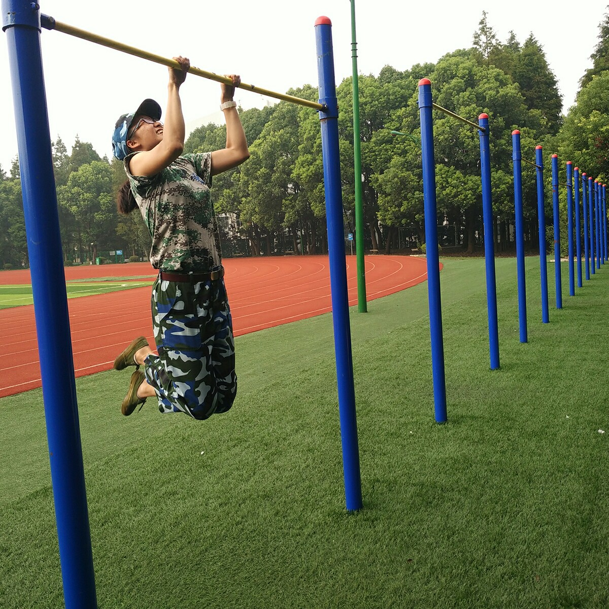

[转寄/推荐][转贴][删除][修改][设置可RE属性][上一篇][返回讨论区][下一篇][回文章][同主题列表][同主题阅读][从这里展开]
发信人: WiniM(WiniM), 信区: outdoor 标 题: 【报到】(and爆照了。。。楼下继续！！！) 发信站: 饮水思源 (2015年11月03日17:08:10 星期二) 文颖 携马甲WiniM到贵版报到 2014级 物理系 广州人 2014年加入组织部 2015级装备部小鲜肉⊙﹏⊙ 现任攀岩队副队长 其余职务不说了免得被群殴→_→ 下面爆照！！楼下继续 脸不给看  screen.width - 200){this.width = screen.width - 200}"> |
[转寄/推荐][转贴][删除][修改][设置可RE属性][上一篇][返回讨论区][下一篇][回文章][同主题列表][同主题阅读][从这里展开]